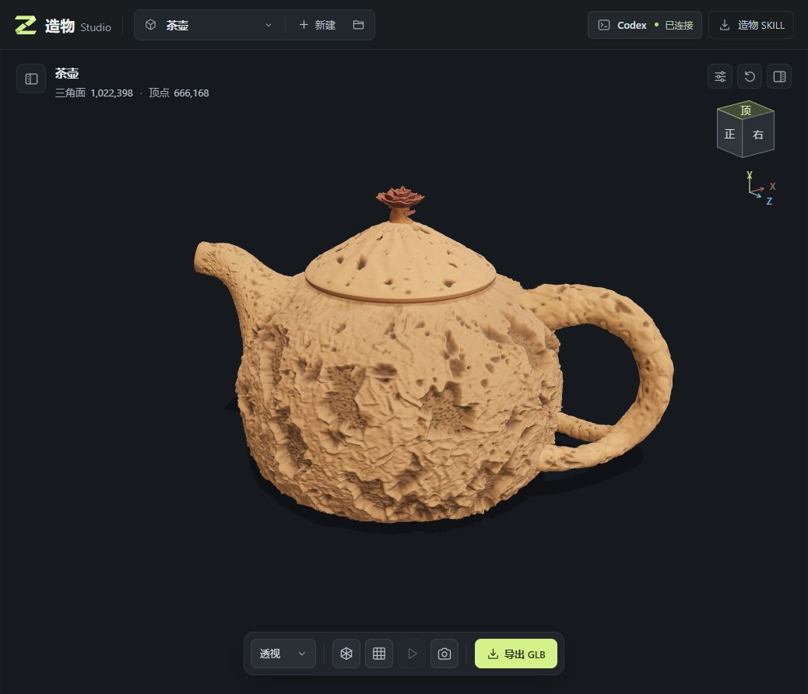
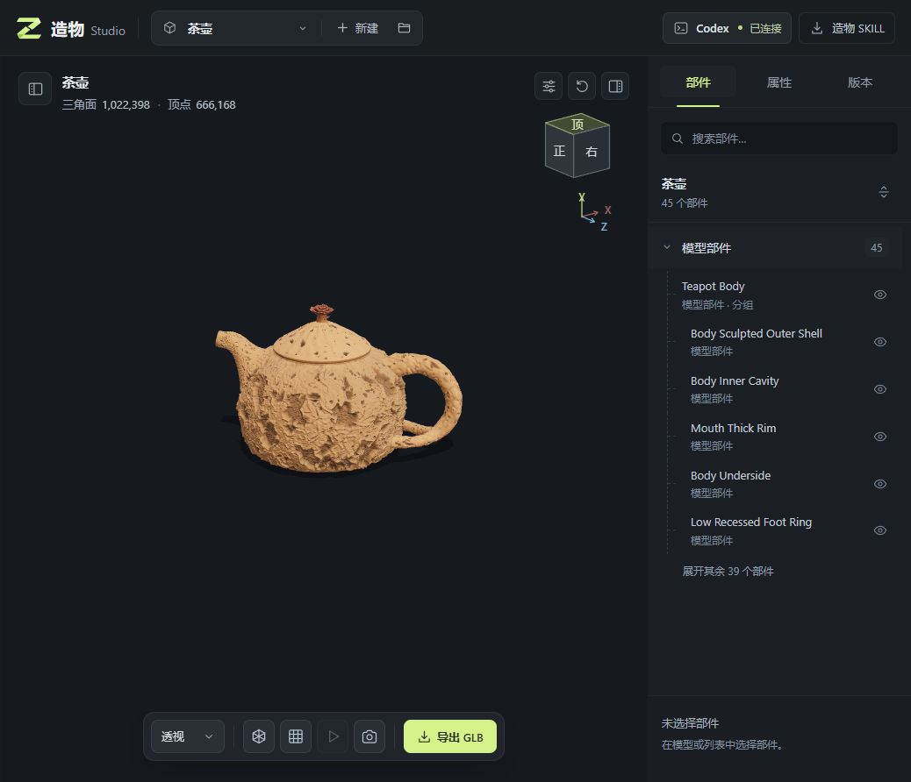
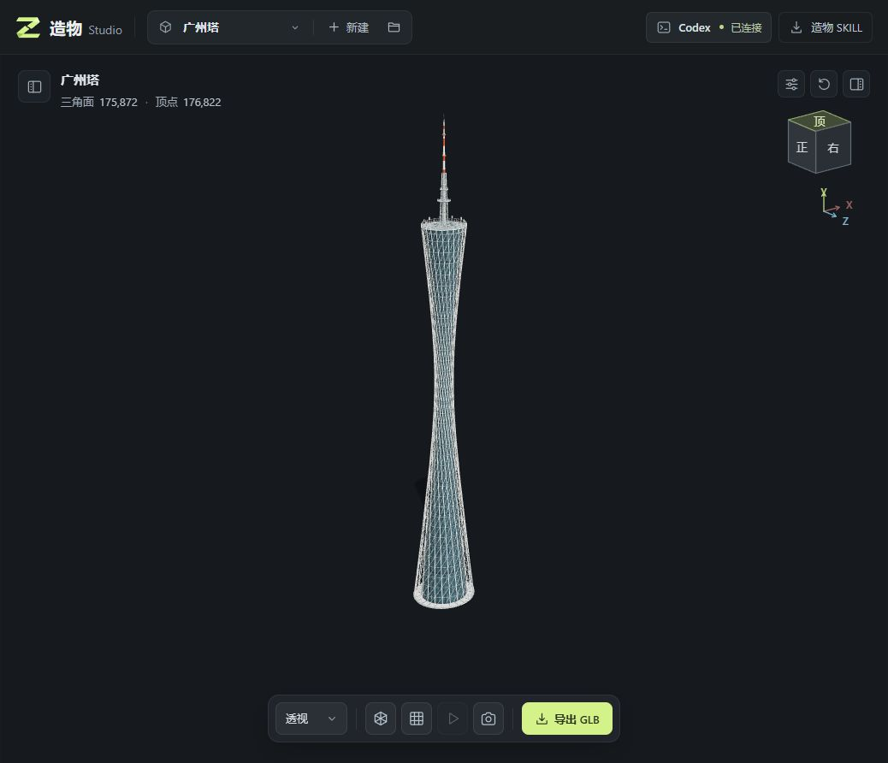
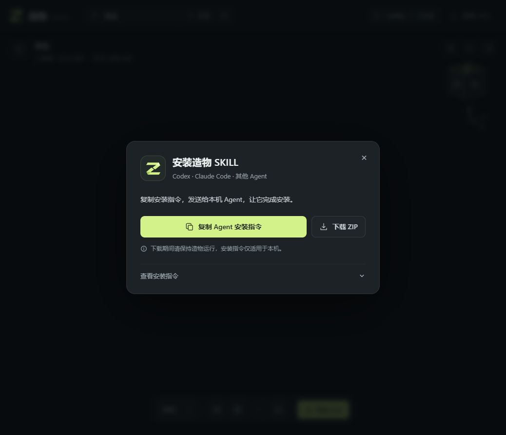

这次做的造物 Studio，是一个运行在本机的三维建模工作台：上传参考图，交给 Agent 编写模型，在浏览器里查看结果，再带着部件和图片上下文继续调整。参考图、模型源码、会话和版本放在同一个项目中，最后可以导出 GLB。
先看这次做出来的模型
茶壶和广州塔都是本次实际生成并加载的项目。茶壶用于尝试曲面、壶盖、把手与表面细节；广州塔用于尝试细腰轮廓、交叉桁架和重复构件。截图展示的是当前结果，仍然能继续修改。

表面细节由当前模型实现，并不代表从参考照片精确恢复了材质。

- 1,022,398 三角面
- 666,168 顶点
- 45 部件节点
右侧列出模型部件，顶部显示几何统计。

截图统计为 175,872 个三角面、176,822 个顶点。规则的轮廓与重复结构，比较容易用参数和程序化几何表达。
以上数字来自展示截图，只说明模型规模。部件节点包含分组，不等于独立制造零件；面数多也不等于还原准确或质量更高。
在工作台里创作，也能在 Agent 里调用
连接本地 Codex CLI
- 安装并登录 Codex CLI，在造物里连接本地 Agent。
- 新建项目，上传并勾选多张参考图，点击“开始建模”；文字要求可以留空。
- 选中部件，补充修改要求或多组细节图，继续同一项目的会话。
平台会为工程准备造物 SKILL，并把任务交给 Codex。状态、回复、停止操作和结果预览都在工作台内。
安装造物 SKILL
- 打开顶部“造物 SKILL”，复制 Agent 安装指令，或下载 ZIP。
- 把安装指令交给 Codex，或按其他 Agent 支持的 Skills 目录安装。
- 明确指定造物工程目录，提供参考图和要求，让 Agent 编辑该工程的模型。
这条路径允许在 Agent 自己的界面建模。造物检测本地 model.js 的变化后，再走版本和预览校验。

造物 SKILL 的技能名是 model-studio。在支持显式技能调用的 Codex 会话中，可以这样发起任务：
使用 $model-studio，在我指定的造物工程目录中，参考这些图片制作茶壶。
壶身、壶盖、壶嘴和把手分别命名、分组，便于后续选择和调整。
请读取工程内的任务约定，修改 model.js，并检查模型能否加载。复制指令中的下载地址来自本机服务，需要在运行造物的同一台电脑上下载，并保持造物运行。其他电脑或云端 Agent 应接收下载好的技能包。其他支持 Skills 的 Agent 可以遵循这份建模约定；目前工作台内置的直接连接针对 Codex CLI，安装技能不会自动增加其他 Agent 的通信桥接。
Agent 写模型，Three.js 负责展示
造物这次采用的路径是：Agent 理解参考图与要求，编写 Three.js 几何和材质代码，工作台执行约定的入口并渲染。模型入口 createModel() 返回 { root, animations? }，其中 root 是 Three.js 对象树；有名称的对象和分组构成可选择的部件。
因此，Three.js 本身不是图片转 3D 的学习模型，SKILL 也不是模型权重。当前项目没有集成专用图片转 3D 权重；效果取决于 Agent 的代码、几何表达和迭代过程。规则建筑、器物较容易拆成参数和重复结构，人物比例、面部、衣褶等有机形体则更难靠这条路线做到自然。
实现依据：SKILL 的模型接口、模型加载与检查。
一次修改如何变成可查看的版本
整理任务上下文
收集选中的参考图、补充图片组、用户要求、部件与视角等信息，写入项目的任务上下文，再组装发送给 Agent 的内容。
交给本地 Codex
连接程序启动 Codex
app-server，通过标准输入输出上的 JSON-RPC 通信；创建或恢复线程，再用turn/start发起任务。记录候选版本
Agent 修改工程内的
model.js。任务结束后，服务检查文件是否变化；变化的源码先保存为待验证快照，不直接当作成功结果。执行预览校验
独立的沙箱 iframe 加载模型，进行源码检查、编译、模型构建和几何数据检查。浏览器完成首帧渲染后，才发出预览就绪消息。
确认或退回版本
通过校验后更新有效版本；失败时保留可回退的结果。版本检查带有标识，避免较早任务的失败回报覆盖已经产生的更新。
查看、再修改与导出
可以先只读预览旧版本，再决定是否恢复。导出 GLB 时使用原始材质和收拢姿态，并遵循当前部件的可见性。
任务事件通过 SSE 推送给界面，回复与进度随事件更新，审批请求和停止任务也有对应处理。生成中的粒子动效用来表示任务仍在进行；它不代表精确百分比，Agent 回复结束也不等于新模型已经通过预览。
实现依据：上下文与任务结束处理、Codex 通信桥、候选快照与回退、沙箱预览、首帧校验、GLB 导出。
每个工程有哪些文件
.studio/projects/<项目标识>/
work/
model.js 模型入口
task-context.json 当前任务上下文
AGENTS.md 工程约定
.agents/skills/model-studio/ 工程使用的造物 SKILL
参考图片、会话、模型快照和部件调整由项目存储管理。工作文件保存在本地，AI 推理仍由所连接的 Agent 服务处理；“本地工作台”不表示全部推理离线完成。
让结果可修改，比一次出图更重要
- 上下文能接着用参考图可多选、拖拽上传；后续会话可以附上多组图片。选中具体部件再提要求，比重新描述整个模型更明确。
- 查看与修改分开历史版本先预览，再确认恢复。深浅背景、白模、线框和网格用于观察；白模查看不会替换导出时的原材质。
- 状态需要说清楚区分 Agent 处理中、模型待验证、预览完成和失败；进度界面不能只显示一个永远转动的加载符号。
- 部件展开有边界当前的开合是部件展开、收拢的展示动效，方便理解构成，不会自动推断铰链、骨骼或真实机械运动关系。
这条路线适合快速尝试造型、拆分结构与程序化建模。人物、复杂有机形体、照片级材质、生产级拓扑仍需更多处理。自动检查能发现一部分代码、结构和几何错误，不能替代对比例、审美、物理结构和最终用途的人工判断。
在自己的电脑上试一次
准备 Node.js 22 或更新版本，安装并登录 Codex CLI。克隆有权限访问的仓库，进入项目目录后运行：
npm ci
npm start打开 http://127.0.0.1:4174，连接 Codex，新建工程并上传参考图。服务只绑定本机回环地址；团队仓库用于分发代码，不会自动变成所有人共用的在线建模服务。
验证记录
本文实现依据固定到 1db5ff4：48 个 JavaScript 文件通过语法检查；自动测试 92 项通过、1 项真实 Codex 联动测试跳过。跳过项没有计为通过，实际截图也不代表所有输入、环境和建模质量都已覆盖。
可复核命令：npm run check、npm test；环境与脚本见项目配置。